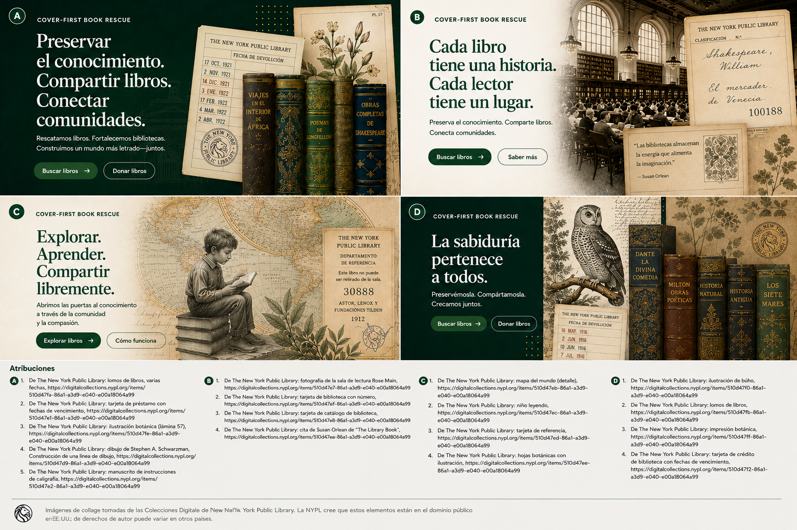

Los ejemplos institucionales de esta página sirven solo como representación conceptual del flujo de trabajo y no implican asociaciones o implantaciones existentes.
Guía para instituciones
Revisa ofertas de libros con suficiente estructura para decisiones reales.
Let Books está pensado para procesos favorables a las bibliotecas, pero también para escuelas, universidades, archivos y asociaciones que necesitan revisión práctica y coordinación de recogida.

Cuándo esta guía es para ti
- Revisas libros que ofrecen donantes.
- Necesitas una selección estructurada en lugar de correos informales.
- Quieres vincular decisiones a identificadores estables.
- Te importan el origen de los datos, el estado y la viabilidad de la recogida.
Qué puede ser una institución
- Bibliotecas públicas y académicas
- Escuelas y universidades
- Archivos y colecciones especializadas
- Asociaciones y otras organizaciones socias
Proceso básico de revisión
El proceso MVP es intencionadamente sencillo porque muchas instituciones aceptarán antes una hoja de cálculo que un portal nuevo.
Recibe la exportación
Abre una lista con ID estables y metadatos legibles.
Marca decisiones
Elige querido, quizá o no querido y añade comentario si hace falta.
Devuelve el archivo
Usa un flujo conocido sin cuenta nueva obligatoria.
Importa las decisiones
El donante recupera tus decisiones sin asociaciones ambiguas por título.
Crea la lista de recogida
Las copias solicitadas se agrupan por ubicaciones reales.
Coordina la entrega
La recogida y el transporte quedan fuera de la plataforma hasta que funciones futuras lo amplíen de forma explícita.
Por qué importa el origen de los datos
Las instituciones deben saber si un dato proviene de una persona, de OCR, de un catálogo externo o de una importación. La confianza y el estado de revisión deben ser visibles.
La logística física sigue decidiendo
Una copia solicitada solo es útil cuando alguien puede encontrarla. La lista de recogida por sala, estantería y caja lo hace práctico.
Ejemplo: Una biblioteca municipal, un departamento universitario y un archivo local revisan una exportación de un donante privado y cada uno elige copias distintas según el estado y la adecuación del contenido.